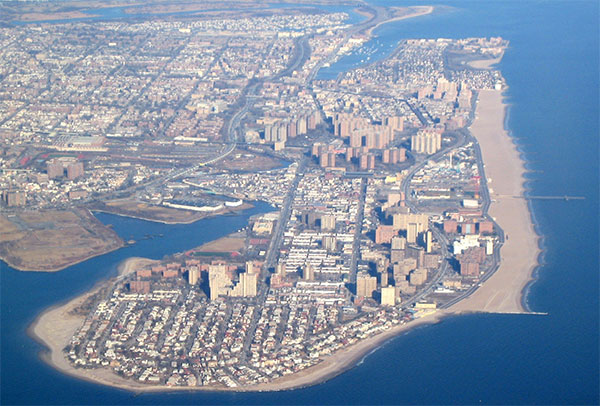

histoire
New York officiellement City of New York, autrement connue sous les noms et abréviations de New York City ou NYC, est la plus grande ville des États-Unis et l'une des plus importantes du continent américain. Elle se situe dans le Nord-Est des États-Unis, sur la côte atlantique, à l'extrémité sud-est de l'État de New York. La ville de New York se compose de cinq arrondissements appelés boroughs : Manhattan, Brooklyn, Queens, le Bronx et Staten Island. Ses habitants s'appellent les New-Yorkais. En 1664, les Anglais conquirent la Nouvelle-Amsterdam qui fut rebaptisée « New York » en l'honneur de Jacques, duc d'York et frère du roi Charles II. L'anglicanisme devint la religion officielle de la colonie en 1698. La ville se développa rapidement : en 1700, elle comptait près de 5 000 habitants. Les premières institutions culturelles furent fondées comme le King's College en 1754. Le commerce se diversifia et se développa notamment grâce à l'aménagement du Great Dock sur l'East River en 167
géographie
New York officiellement City of New York, autrement connue sous les noms et abréviations de New York City ou NYC, est la plus grande ville des États-Unis et l'une des plus importantes du continent américain. Elle se situe dans le Nord-Est des États-Unis, sur la côte atlantique, à l'extrémité sud-est de l'État de New York. La ville de New York se compose de cinq arrondissements appelés boroughs : Manhattan, Brooklyn, Queens, le Bronx et Staten Island. Ses habitants s'appellent les New-Yorkais. En 1664, les Anglais conquirent la Nouvelle-Amsterdam qui fut rebaptisée « New York » en l'honneur de Jacques, duc d'York et frère du roi Charles II. L'anglicanisme devint la religion officielle de la colonie en 1698. La ville se développa rapidement : en 1700, elle comptait près de 5 000 habitants. Les premières institutions culturelles furent fondées comme le King's College en 1754. Le commerce se diversifia et se développa notamment grâce à l'aménagement du Great Dock sur l'East River en 167
démographie
La ville de New York est la ville la plus peuplée des États-Unis, avec une population deux fois supérieure à la deuxième ville du pays, Los Angeles (3 743 995 habitants). Elle compte en effet 8 175 133 habitants en 2010, ce qui représente près de 40 % de la population de l'État de New York. Le Grand New York ou New York Metropolitan area est l'aire urbaine la plus peuplée des États-Unis et la troisième du monde derrière Tokyo et Mexico. Cette région s'étend sur quatre États (New York, New Jersey, Connecticut, Pennsylvanie) et quelque 17 400 km2. Sa population est de 18,8 millions d'habitants en 20. La CMSA de New York rassemble environ 22,2 millions d'habitants en 2009